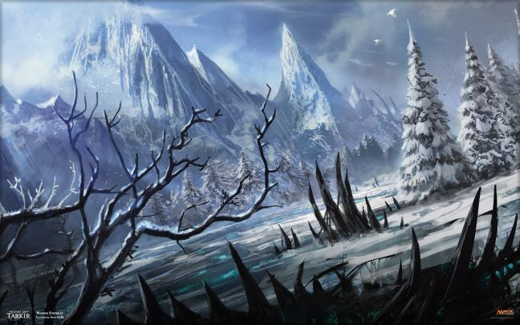
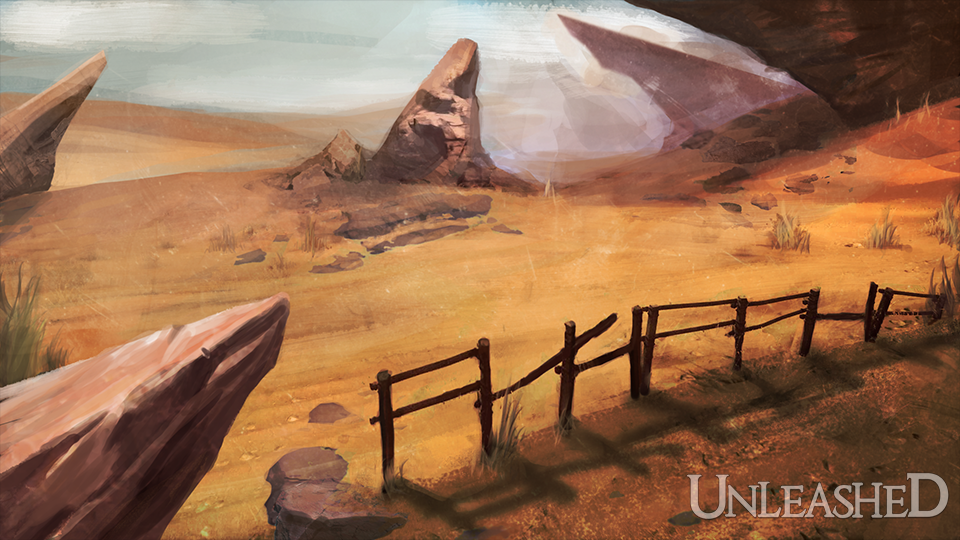
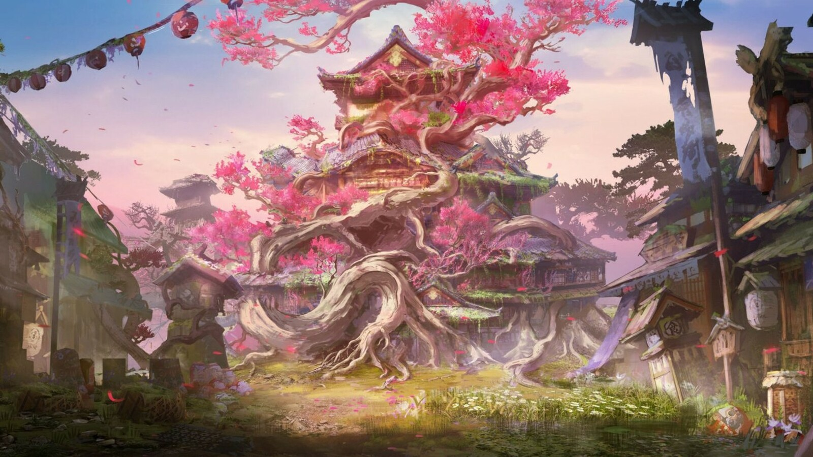
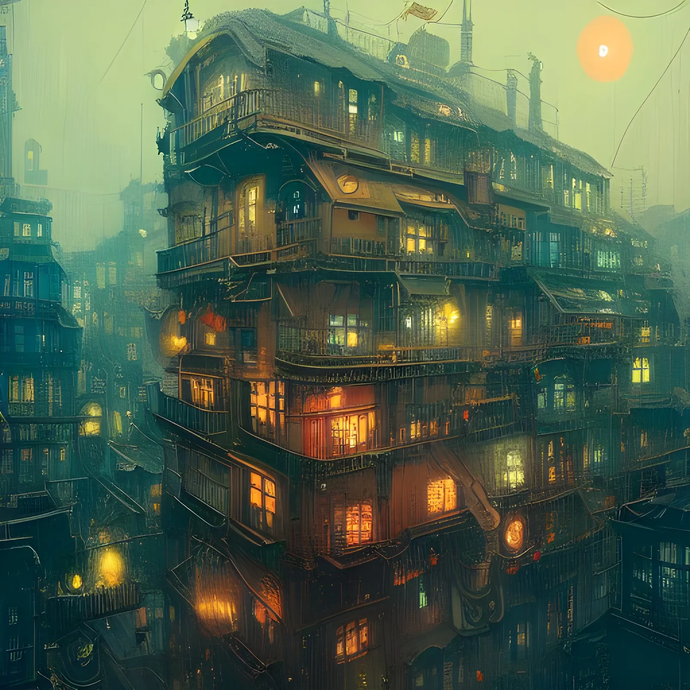

|  | O Reino do Norte é repleto de montanhas congeladas e rios de gelo com noites terrivelmente frias, em sua sociedade as pessoas acreditam na força do mais forte, sendo ele normalmente o responsável da cidade. É lá também onde existe uma das acadêmicas, mais prestigiadas de todo o mundo, atraindo visitantes e estudantes de cidades longínquas. |
|  | O Reino do Sul é tomado por desertos e um clima seco e quente, com dias escaldantes e com diversas dunas e monumentos enterrados na areia. Sua sociedade É hierárquica e meritocrática, onde os mais poderosos são considerados deuses e entram para a mitologia da região, as pessoas deste lugar sempre buscam ascender as divindades e passar seu conhedimento de forma atemporal. |
|  | O Reino do Leste fica no oriente, cortado por diversos rios e palco de incontáveis batalhas. Pelas sombras grupos criminosos caminham, tomado por monastérios, santuários e templos, dominado pela magia, chakra, ki, devido isso, as florestas são mais vivas. as armas mais forte e as magias mais poderosas. |
|  | Conhecido antigamente como as "terras verdegantes," o reino do oeste sempre foi prestigiado pelas suas florestas e sua ligação com o mundo natural, sendo conhecido nos livros de histórias como o principal ponto ao centro do mundo, como os deuses e os dragões sendo os primeiros habitantes de tal continente, assim, vida foi bastante prósperas por um longo tempo. Ao passar das, com a intervenção mortal, a natureza que um dia ali existia, a qual carregava grandes nomes, como o próprio Clã dos Esmeralda de Musgo, sofria cada vez mais danos severos com a conhecida guerra das lótus, oque resultou então na queda e ruptura natural, com cada vez mais a intervenção mortal sofrendo quebras de barreiras no que um dia foi a "terra dos deuses", até então chegarmos aos dias atuais, com o crescimento e aproveitamento tecnológico com as fagulhas da magia, assim então fazendo com que o Oeste se tornado a grande metrópole. |